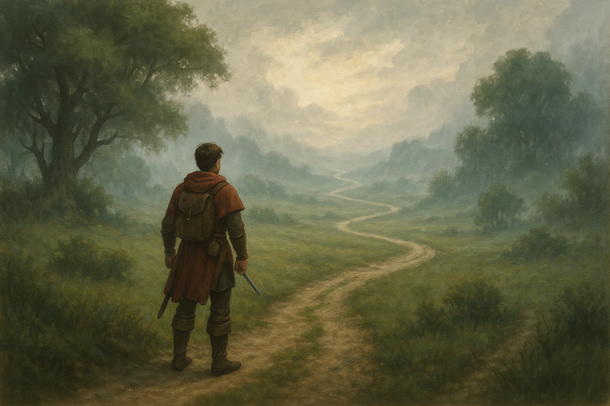

Your Next Adventure Awaits
Transform your tasks into quests and navigate your day with clarity and purpose.
What Now?
Answer questions to narrow down your next task.
Compass
Find direction with a variety of suitable tasks.
Questlog
Manage all your tasks and create new quests.
What Now?

Take a Moment to Center Yourself
Before we begin our journey together, let's take a calming breath. Watch the circle and breathe with it - in as it grows, out as it shrinks.
Remember, there are no wrong paths - only different adventures waiting to unfold.
Available Quests
Here are all tasks that match your chosen path:
Your Chosen Path:
No matching tasks found. Try different answers or add new tasks in the Questlog.
Perfect matches found! 🎯
Showing closest matches based on your preferences ✨
Compass
The Compass helps you find your way even when the path seems unclear.